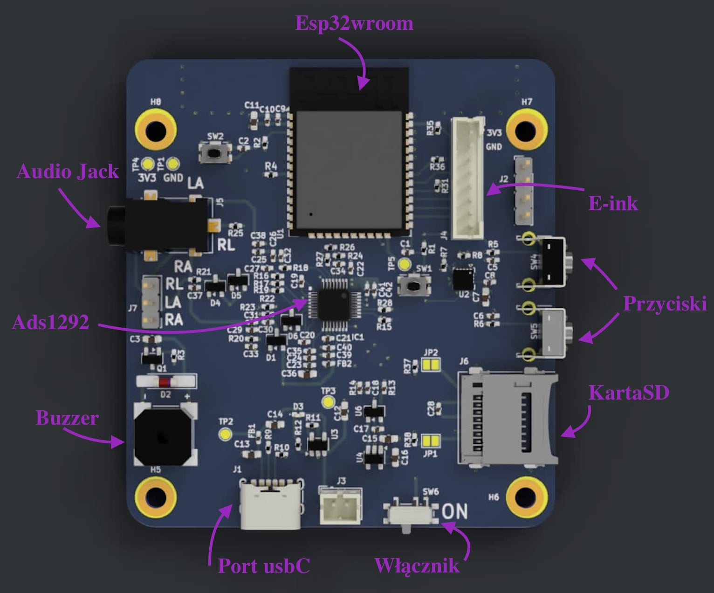

Urządzenie Rythmio zostało zaprojektowane z myślą o maksymalnej redukcji zakłóceń podczas codziennych aktywności. Zastosowany zaawansowany analogowy front-end precyzyjnie wzmacnia różnicę potencjałów z klatki piersiowej pacjenta, filtrując szumy i przesyłając czysty sygnał kardiologiczny.

| Główny procesor | ESP32-WROOM-32E (Dual-Core, WiFi/BLE) |
| Przetwornik EKG | ADS1292 (24-bitowy analogowy front-end) |
| Kanały pomiarowe | 1 kanał, układ 3-elektrodowy (RA, LA, RL) |
| Częstotliwość próbkowania | 250 Hz (stabilna, sprzętowa) |
| Zasilanie i port | Akumulator Li-Ion 3500 mAh / USB-C |
Poniższe zestawienie opisuje kluczowe układy scalone oraz architekturę warstwy sprzętowej zaimplementowaną w urządzeniu Rythmio.
ESP32-WROOM-32E stanowi serce urządzenia. Ten wydajny, dwurdzeniowy mikrokontroler koordynuje zbieranie próbek w czasie rzeczywistym, przetwarza je wstępnie, zarządza pamięcią podręczną oraz obsługuje energooszczędny protokół Bluetooth Low Energy.
Układ scalony ADS1292 to medyczny, 24-bitowy przetwornik analogowo-cyfrowy. W celu uzyskania najwyższej czystości sygnału i eliminacji szumów, na etapie projektu PCB rygorystycznie odseparowano masę i zasilanie analogowe od części cyfrowej.
Zanim sygnał z klatki piersiowej trafi do przetwornika, przechodzi przez dedykowany stopień filtracji pasywnej EMI/RFI oraz diody zabezpieczające przed wyładowaniami elektrostatycznymi (ESD), chroniąc wrażliwą elektronikę oraz ciało pacjenta przed uszkodzeniem.
Wyświetlacz wykonany w technologii E-Ink na bieżąco prezentuje kluczowe metryki badania. Pokazuje aktualne tętno (BPM), precyzyjny stan naładowania baterii oraz ikonę statusu bezprzewodowego połączenia Bluetooth.
Zintegrowany slot na kartę microSD umożliwia nieprzerwany zapis pełnego, surowego przebiegu sygnału EKG z całego okresu badania. Gwarantuje to bezpieczeństwo danych pacjenta w przypadku utraty połączenia bezprzewodowego z telefonem.
System wyposażono w pojemne ogniwo Li-Ion 3500 mAh, zapewniające wielodniową, stabilną pracę bez przerw. Układ ładowania zintegrowano z nowoczesnym, uniwersalnym portem USB-C, chroniąc baterię przed przeładowaniem.
Wbudowany akcelerometr konwertuje przyspieszenia na średnią aktywność fizyczną użytkownika. Pozwala to aplikacji mobilnej i lekarzowi odróżnić naturalnie podwyższone tętno (wynikające z wysiłku) od anomalii i artefaktów ruchowych.
Zintegrowany przetwornik piezoelektryczny pełni funkcję asystenta bezpieczeństwa. Pika cyklicznie w przypadku wykrycia fizycznego odłączenia się elektrod od ciała, a także emituje potrójny sygnał dźwiękowy informujący o pomyślnym zakończeniu sesji pomiarowej.
Dedykowany układ RTC (Real-Time Clock) z niezależnym podtrzymaniem zasilania precyzyjnie synchronizuje czas urządzenia. Dzięki temu każdy plik pomiarowy zapisany na karcie SD posiada dokładny znacznik godziny i daty, kluczowy dla diagnozy lekarskiej.
Urządzenie posiada dwa fizyczne przyciski funkcyjne zlokalizowane po prawej stronie obudowy. Ich działanie zależy od aktualnego stanu urządzenia: